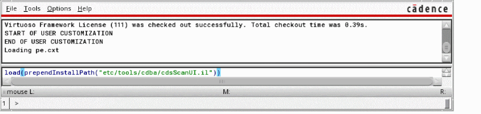
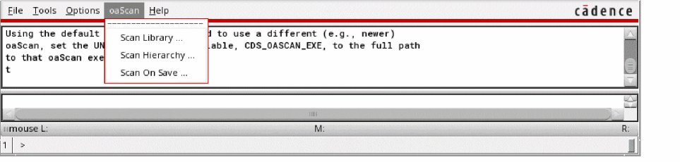
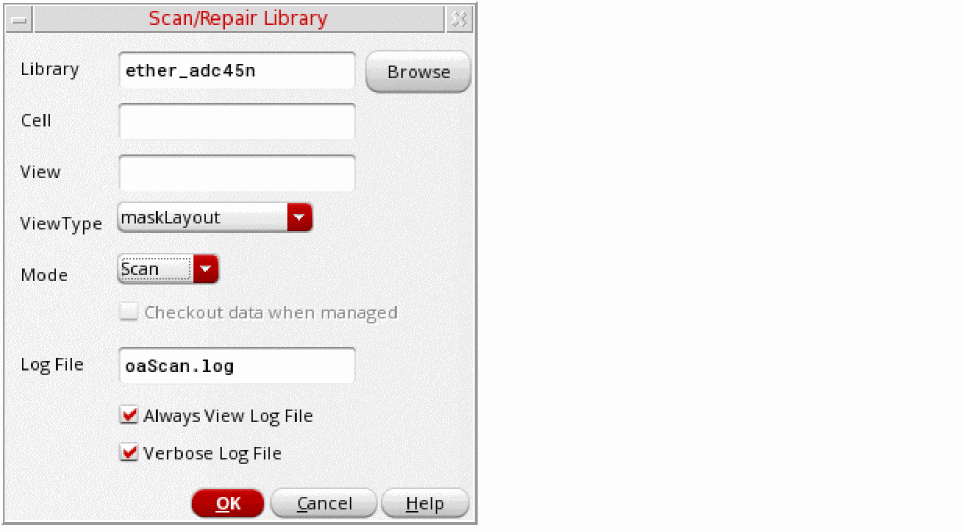
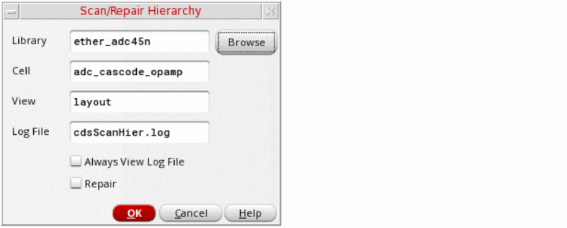
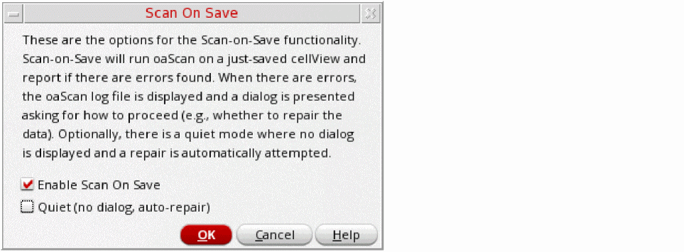

E
Using the oaScan Utilities for Virtuoso
oaScan is an unlicensed application that scans the contents of a library; checks for inconsistencies in the OpenAccess design, technology, and DMData databases; and optionally repairs the inconsistencies and saves the databases.
Inconsistencies are more common with older versions of OpenAccess, such as those released earlier than April 2008. oaScan can be used to upgrade inconsistent data to current quality standards and is maintained on an ongoing basis so that OpenAccess users can continuously monitor the integrity of their data.
Recommended Methodology
- Scan data that was created or modified by older versions of OpenAccess in order to identify data inconsistencies and then perform a repair to correct any inconsistencies found.
- Conduct periodic data scans in case older versions of OpenAccess are reintroduced into the design flow and repair any inconsistencies found.
- Run oaScan on data as it is being checked into a global workspace from a user’s local workspace when using a design management system.
This appendix describes three GUI-based utilities that you can load in Virtuoso and access from the Command Interpreter Window (CIW) to help you implement the recommended methodology. For more information, see
- Scanning a Library to run oaScan on a library or cellview
- Scanning a Hierarchy to run oaScan on all the cellviews in a design hierarchy
- Scanning Cellviews Automatically during Save to run oaScan every time a cellview is saved
Full details of the functionality underpinning these utilities is available in the OpenAccess oaScan User Guide.
Enabling the oaScan Utilities
By default, the oaScan utilities are hidden in Virtuoso. To enable them:
-
Type the following in the CIW:
load(prependInstallPath("etc/tools/cdba/cdsScanUI.il"))
The oaScan menu is added to the menu bar:

Specifying the oaScan Version to Use
By default, the utilities use the version of oaScan shipped with your Virtuoso hierarchy. To check the version installed, type the following in a terminal window:
%> oaScan -v
Tool: oaScan oaScan_p040 (22.50)
To use a different version of oaScan (for example, if you have received an updated version from Cadence), set the CDS_OASCAN_EXE shell environment variable to point to the oaScan binary you want to use:
%> setenv CDS_OASCAN_EXE path/oaScan
Scanning a Library
To scan an entire library or a particular design database for OpenAccess issues:
-
From the CIW menu bar, choose oaScan – Scan Library.
The Scan/Repair Library form is displayed.
 - Specify the name of the library to scan and, optionally, the cell and view names if you want to perform the scan on a particular design database.
- Choose a ViewType to limit the scan to only views of the specified type.
- Select the Mode in which the design is to be scanned:
-
Specify a name for the log file (the default is
oaScan.log).
You can also specify that the log file is always displayed on completion and that it lists all designs processed rather than only those that have issues. - Click OK to scan the specified database.
Scanning a Hierarchy
You can scan all the cellviews in a specific design hierarchy, starting from a specified top-level cellview. oaScan traverses the design hierarchy and generates a shell script containing one oaScan call for each cellview in the hierarchy.
-
From the CIW menu bar, choose oaScan – Scan Hierarchy.
The Scan/Repair Hierarchy form is displayed.
 - Specify the library, cell and view names of the top-level cellview.
-
Specify a name for the log file (the default is
cdsScanHier.log). - Check the Always View Log File box to specify that the log file is always displayed on completion of the scan.
- Check the Repair box to automatically repair any issues found in the design hierarchy.
- Click OK to scan the hierarchy.
Scanning Cellviews Automatically during Save
Instead of manually calling oaScan after each design update, you can run the check automatically any time you save data to disk. The software first makes a backup copy of the pre-save database and then runs oaScan on the newly-saved data. If a data issue has been introduced in the session since the last save, the backup copy can be restored.
Enabling Scan on Save
-
From the CIW menu bar, choose oaScan – Scan On Save.
The Scan On Save form is displayed.
 - Check the Enable Scan On Save box to switch on the feature.
-
Click OK to save the settings.
Whenever you save a cellview, Virtuoso automatically makes a backup copy of the cellview and runs oaScan.- If the cellview is clean, a message to confirm this is issued in the CIW.
- If the saved data has an issue, Virtuoso pops up a dialog where you can confirm what action to take next. See Handling Scan On Save Results for more information.
Specifying the Location of Scan On Save Log Files
By default, the log files generated by Scan On Save are saved to the /tmp directory.
Cadence recommends that you create a central location in which to store log files and point to it using the CDS_SCANLOG shell environment variable. For example:
setenv CDS_SCANLOG "DIR=/home/user/scanlogs"
This lets you collect all oaScan log files in one place allowing you to easily locate and forward them to Cadence if required.
Handling Scan On Save Results
If the scan reveals an issue in the saved data, Virtuoso pops up a dialog where you can confirm what action to take next.
If the data contained an oaScan issue before the save, you see the dialog below:
If an oaScan issue was found when the original data was clean, you see the dialog below:
Repairing Issues Automatically
To suppress the Scan On Save results dialogs and automatically repair any issues found, check the Quiet box in the Scan On Save form. When this setting is enabled, no dialog is popped up and oaScan attempts to automatically repair the cellview if required.
Forms
This section describes the forms available from the oaScan menu.
Scan/Repair Hierarchy
Use Scan/Repair Hierarchy to scan all the cellviews in a specific design hierarchy, starting from the specified top-level cellview. The software traverses the design hierarchy and generates a shell script containing one oaScan call for each cellview in the hierarchy.
Library , Cell , and View let you specify the top-level cellview of the hierarchy to be processed.
Log File
specifies the name of the log file generated by oaScan. The default is cdsScanHier.log.
Always View Log File displays the log file on the desktop after each run.
Repair automatically repairs any issues found in the design hierarchy.
Related Topic
Scan/Repair Library
Use Scan/Repair Library to scan an entire library or a specific design database for OpenAccess issues.
Library specifies the library to be scanned.
Cell lets you specify the name of a cell to be processed. If not specified, all the cells in the library are processed.
View lets you specify a view name to be processed. If the Cell option is specified, oaScan processes the cellview in question. If the Cell option is not specified, all views with the specified name are processed.
ViewType limits the scan to databases of the selected type.
Mode lets you choose the mode in which the design is processed.
- Scan reports issues found but does not repair them
-
Repair automatically repairs any issues found in the database
Checkout data when managed attempts to automatically check out and repair managed data when required. (This option is available only if your data is managed.)
Log File
specifies the name of log file generated by oaScan. The default is oaScan.log.
Always View Log File displays the log file on the desktop after each oaScan run.
Verbose Log File list in the log file information on all the designs processed rather than only those that have issues.
Related Topic
Scan On Save
Use the Scan On Save form to run oaScan automatically any time you save data to disk.
Enable Scan On Save switches on automatic checking during cellview save.
Quiet (no dialog, auto-repair) suppresses the pop up results dialog and attempts to automatically repair any issue found.
Related Topics
Specifying the Location of Scan On Save Log Files
Repairing Issues Automatically
Return to top